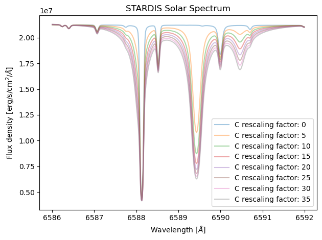

Changing Parameters
Import Necessary Code
[1]:
import numpy as np
import matplotlib.pyplot as plt
from stardis.base import run_stardis
from astropy import units as u, constants as const
How to Update Parameters
There will be instances where you may want to temporarily change or add to the YAML configuration file you are using to make your STARDIS simulations, but don’t worry, you won’t need to edit the file every time. Instead, you can add the argument add_config_dict to run_stardis and temporarily set/change parts of your file this way.
For example, if your YAML file had final_atomic_number: 30 but you wanted final_atomic_number: 10 for just one simulation, you could run: sim = run_stardis('my_yaml.yml', tracing_lambdas, add_config_dict = {'input_model.final_atomic_number' : 10}) note how, as final_atomic_number falls under input_model within the YAML file, it must be entered above as 'input_model.final_atomic_number'
Example Use
[3]:
tracing_lambdas = np.mgrid[6586:6592:0.01]* u.Angstrom
for carbon_rescaling in range(0, 40, 5):
sim = run_stardis('Changing_Param_Example.yml', tracing_lambdas, add_config_dict={'input_model.nuclide_rescaling_dict': {'C' : carbon_rescaling}})
plt.plot(sim.lambdas, sim.spectrum_lambda, alpha = 0.4, label = f"C rescaling factor: {carbon_rescaling}")
plt.title("STARDIS Solar Spectrum")
plt.xlabel(r"Wavelength [$\AA$]")
plt.ylabel(r"Flux density [erg/s/cm$^2$/$\AA$]")
plt.tight_layout()
plt.legend()
plt.show()
WARNING: UnitsWarning: 'erg/cm2/s' contains multiple slashes, which is discouraged by the FITS standard [astropy.units.format.generic]
WARNING: UnitsWarning: 'erg/cm2/s' contains multiple slashes, which is discouraged by the FITS standard [astropy.units.format.generic]
WARNING:astropy:UnitsWarning: 'erg/cm2/s' contains multiple slashes, which is discouraged by the FITS standard
WARNING: UnitsWarning: 'erg/cm2/s' contains multiple slashes, which is discouraged by the FITS standard [astropy.units.format.generic]
WARNING:astropy:UnitsWarning: 'erg/cm2/s' contains multiple slashes, which is discouraged by the FITS standard
WARNING: UnitsWarning: 'erg/cm2/s' contains multiple slashes, which is discouraged by the FITS standard [astropy.units.format.generic]
WARNING:astropy:UnitsWarning: 'erg/cm2/s' contains multiple slashes, which is discouraged by the FITS standard
WARNING: UnitsWarning: 'erg/cm2/s' contains multiple slashes, which is discouraged by the FITS standard [astropy.units.format.generic]
WARNING:astropy:UnitsWarning: 'erg/cm2/s' contains multiple slashes, which is discouraged by the FITS standard
WARNING: UnitsWarning: 'erg/cm2/s' contains multiple slashes, which is discouraged by the FITS standard [astropy.units.format.generic]
WARNING:astropy:UnitsWarning: 'erg/cm2/s' contains multiple slashes, which is discouraged by the FITS standard
WARNING: UnitsWarning: 'erg/cm2/s' contains multiple slashes, which is discouraged by the FITS standard [astropy.units.format.generic]
WARNING:astropy:UnitsWarning: 'erg/cm2/s' contains multiple slashes, which is discouraged by the FITS standard
WARNING: UnitsWarning: 'erg/cm2/s' contains multiple slashes, which is discouraged by the FITS standard [astropy.units.format.generic]
WARNING:astropy:UnitsWarning: 'erg/cm2/s' contains multiple slashes, which is discouraged by the FITS standard

[ ]: